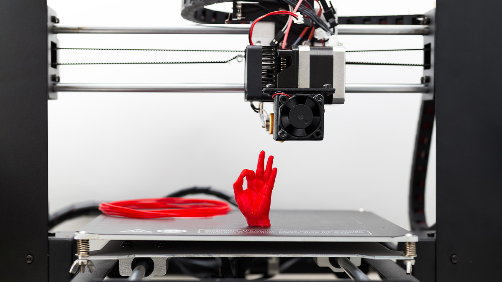
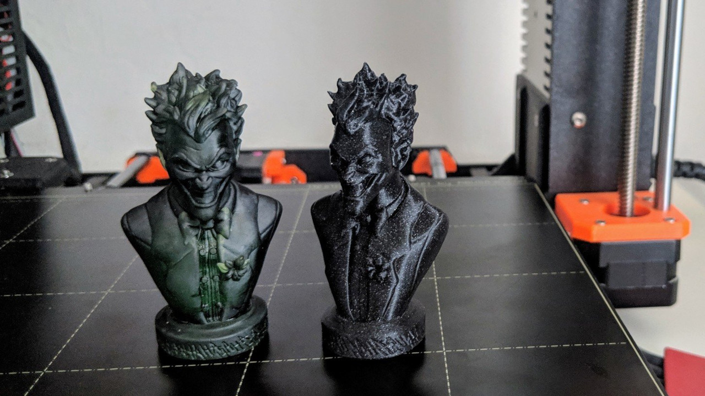
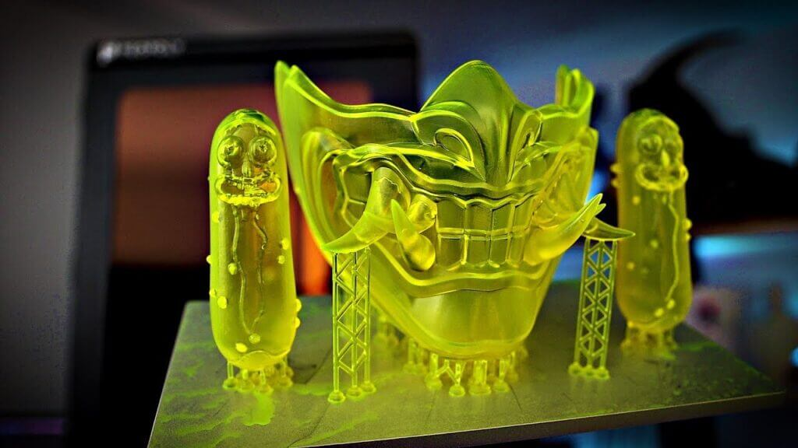
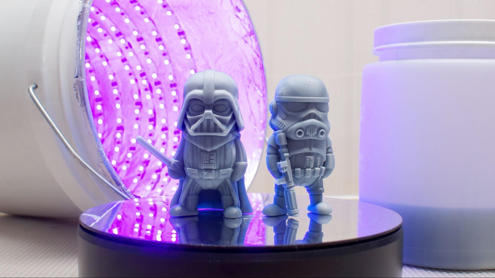
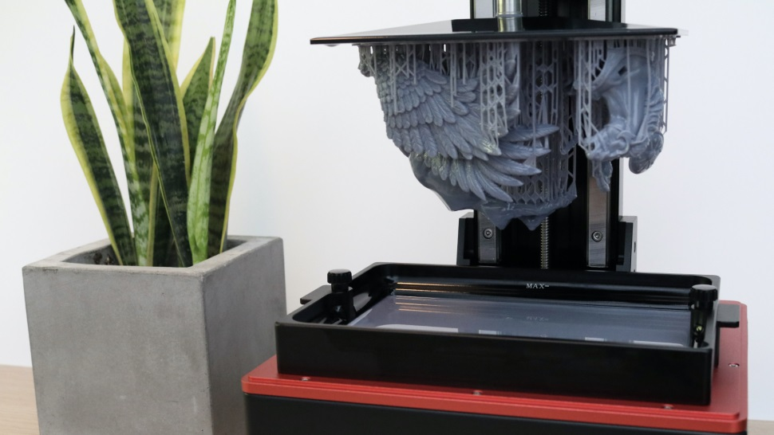

Zrzuty Ekranu
Na potrzeby pokazowe wykonane w naszych studiach do druku 3D

Druk filamentowy z filamentem w kolorze Blood Orange

Druk filamentowy z filamentem w kolorze Crimson

Porównania obu metod durku, żywiczna (lewy druk) i filamentowa (prawy druk)

Druk żywiczny w kolorze Lightning Yellow

Druki żywiczne po utwardzaniu pod światłem ultrafioletowym

Jeden z druków żywicznych w procesie powstawania
© 2022 Copyright: Patryk Skowronek